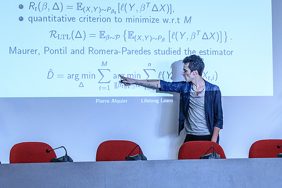

Pierre Alquier
RIKEN AIP - Approximate Bayesian Inference Team - Research scientist
Forthcoming talks
2021/11/18-21 Talk on variational inference, "mean-field" workshop at https://www.imsi.institute/dscsp21/, Chicago.
2021/06/30 Talk at ISBA world meeting, invited session on "Contemporary Challenges in Bayesian Robustness" (ONLINE).
2021/05/27 Talk at the Modal'X seminar, Université Paris Nanterre (ONLINE).
2021/05/19 Talk at the AI seminar series, AI center, University College London (ONLINE).
2021/04/22 Talk: "MMD-based estimation" at the Bocconi Institute for Data Science and Analytics seminar series, Milan (ONLINE).
Past talks
[All the slides that are not directly available through links are available upon request.]
2021/03/10 Talk: "Meta-strategy for Learning Tuning Parameters with Guarantees", RIKEN AIP open seminar, Tokyo (ONLINE). Video:
2021/03/03 Talk: "MMD-based estimation" at the workshop on functional inference and machine intelligence, ISM, Tokyo (ONLINE).
2021/02/01 Talk: "MMD-based estimation" at the statistics seminar of CREST, ENSAE, Paris (ONLINE).
2020/11/04 Talk: "MMD-based estimation", DataSig seminar series at the Alan Turing Institute, London (ONLINE). Video:
2020/10/29 Talk: "Online variational inference", "Mathematics of Online Decision Making", Simons Institute, UC Berkeley (ONLINE). Video:
2020/09/16 Talk: "MMD-based estimation", "New Results on Time Series and their Statistical Applications", CIRM, Marseille (ONLINE).
2020/09/10 Talk: "MMD-based estimation", "Ecology and Stochastic Modeling (EcoDep)" opening conference (ONLINE).
2020/09/09 Talk: "MMD-based estimation", statistics seminar series at the Alan Turing Institute, London (ONLINE).
2020/08/19 Lecture: Introduction to Online Learning, Summer School of Machine Learning at Skoltech, Moscow (ONLINE). Video:
2020/08/18 Talk for PhD students at the CDT in Modern Statistics and Statistical Machine Learning at Imperial and Oxford (ONLINE). Slides.
2020/01/10 Talk: "MMD-Bayes: Robust Bayesian Estimation via Maximum Mean Discrepancy", PI seminar, RIKEN AIP, Tokyo.
2019/12/20 Talk: "Generalization Bounds for Online Variational Inference", Meeting in Mathematical Statistics, CIRM, Marseille.
2019/12/06 Talk: "Generalization Bounds for Online Variational Inference", University of Oxford.
2019/12/05 Talk: "Generalization Bounds for Online variational Inference", Heilbronn Institute, Univ. of Bristol.
2019/11/27 Two "Lectures on Variational Inference", Heilbronn Institute for Mathematical Research, Univ. of Bristol. Lecture 1 and Lecture 2.
2019/11/18 Talk and poster:"Generalization Bounds for Online variational Inference", ACML 2019, Nagoya. Slides and poster.

2019/11/17 Talk: "MMD-based estimation", ACML 2019 workshop on AIP research, Nagoya.
2019/09/12 Talk: "MMD-based estimation", reading group on approximate Bayesian inference, RIKEN AIP, Tokyo.
2019/06/27 Talk: "Generalization bounds for Variational Inference", EcoSta, NCHU Taichung, Taïwan.
2019/05/15 Talk: "Generalization bounds for Online Variational Inference", Eléments de mathématiques pour l'IA", ENS Paris Saclay.
2019/05/10 Talk: "Approximate Bayesian Inference", Università degli Studi di Padova.
2019/05/06 Talk: "Generalization bounds for Variational Inference", séminaire de l'équipe MAIAGE, INRA Jouy-en-Josas.
2019/03/29 Talk: "Approximate Bayesian Inference", workshop on computational geometry, ESIEE, Paris.
2019/02/27 Talk: "Approximate Bayesian Inference", RIKEN AIP, Tokyo.
2019/02/27 Talk: "Concentration of variational approximations", Computation and Econometrics Workshop, GRIPS, Tokyo.
2019/02/18 Talk: "Approximate Bayesian Inference", groupe de travail AOC, IMT, Toulouse.
2019/02/14 Talk: "Introduction to sequential predictions", Machine Learning Meet-up, Pau. Vidéo:

2019/01/16 Talk: "Exponential inequalities for nonstationary Markov Chains", CIMFAV, Universidad de Valparaiso.
2019/01/09 Talk: "Introduction to sequential predictions", CREST working group on Stat/ML/Econometrics, ENSAE ParisTech.
2018/12/12 Talk: "Exponential inequalities for nonstationary Markov Chains", 1rst nonstationary day, Telecom ParisTech.
2018/11/27 Talk: "Prédiction avec avis d'experts", Les mercredis mathématiques du CIRM (pour lycéens), Marseille. Click on the image below to see a video of this talk:
2018/11/27 Talk: "Informed subsampling MCMC", Bayesian statistics in the Big Data era, CIRM, Marseille.
2018/11/16 Talk: "Concentration of variational approximations", statistics seminar, Cambridge University.
2018/11/14 Talk: "Introduction to sequential predictions", London Business School (LBS).
2018/10/29 Talk: "Concentration of variational approximations", machine learning seminar, IIT, Genoa.
2018/10/19 Talk: "Concentration of variational approximations", workshop on probabilistic methods for comp. stats, Telecom Paris Sud.
2018/09/06 Talk: "Concentration of variational approximations", Oslo Centre for Biostatistics and Epidemiology, University of Oslo.
2018/08/24 Talk: "Regret Bounds for Lifelong Learning", INRIA / BNP Paribas Summer School on Artificial Intelligence.
2018/07/12 Talk: "Introduction to machine learning with application to matrix completion", ESME, Paris.
2018/07/06 Talk: "Recent advances on the Consistency of Variational Bayes procedures", IMS meeting , Vilnius.
2018/06/25 Talk: "Variational Approximations in Machine Learning", Scientific computing seminar, CERMICS (ENPC), Paris.
2018/06/06 Talk: "Regret Bounds for Lifelong Learning", French-German Summer School on Transfer Learning, ENS Paris-Saclay.
2018/05/24 Talk: "Regret Bounds for Lifelong Learning", workshop on Multi-Armed Bandits, Erasmus University, Rotterdam.
 
2018/04/24 Talk: "Regret Bounds for Lifelong Learning" , workshop on machine learning, CMLA, ENS Paris-Saclay.
2017/12/22 Talk: "Concentration of variational approximations", MMS (Meeting in Mathematical Statistics), CIRM, Luminy.
2017/12/19 Talk: "Concentration of variational approx.", workshop "High Dimensional Function Approximation", Alan Turing Institute, London. Click on the image below to see a video of this talk:
2017/12/12 Talk: "Concentration of variational approximations", statistics seminar, Université Pierre et Marie Curie, Paris.
2017/10/17 Talk: "On the properties of variational approximations of Gibbs posteriors", RIKEN AIP, Tokyo.
2017/09/22 Talk: "Concentration of variational approximations", France/Japan Machine Learning workshop, Paris.
2017/06/14 Talk: "Regularization with Lipschitz loss", Le Cam Data Science Colloquium, Université Paris Saclay.
2017/06/12 Talk: "Regularization with Lipschitz loss", Séminaire de Statistique, Université Aix-Marseille.
2017/06/07 Talk: "Outils statistiques et algorithmiques pour la complétion de matrices", mini-symposium 'Big Data' SMAI, Ronce-les-Bains.
2017/05/17 Talk: "Regularization with Lipschitz losses", SSSL working group, IHES, Univ. Paris-Saclay.
2017/04/27 Poster (with Léna Carel): NMF and passengers profile clustering, ESANN 2017, Bruges, Belgium.
2017/04/20 Poster (with The Tien Mai): regret bounds for lifelong learning, AISTATS2017, Fort Lauderdale, USA.
2017/01/12 Talk: "On the properties of VB approximations of Gibbs posteriors" (keynote speaker), SMPGD 2017, Imperial College London.
2017/01/10 Talk: "Outils statistiques et algorithmiques pour la complétion de matrices", séminaire Big Data de la DREES, Paris.
2016/10/24 Talk: "Outils statistiques et algorithmiques pour la complétion de matrices", Machine Learning Meetup, Pau .
2016/10/17 Talk: "1-bit matrix completion: a machine learning approach" at the statistics seminar of CREST, ENSAE, Paris.
2016/06/10 Talk: "On the properties of variational approximations of Gibbs posteriors", workshop on Big Data, Centrale Lille.
2016/05/03 Talk: "Pseudo-Bayesian estimation of low-rank matrices", Université Paris Est (Créteil).
2016/03/23 Talk: "On the properties of variational approximations of Gibbs posteriors", IHES, Université Paris Saclay. Click on the image below to see a video of this talk:

2016/01/08 Talk: "PAC-Bayesian Bounds and Aggregation: Introduction, and Algorithmic issues", IHES, Université Paris-Saclay.
2016/01/04 Talk: "PAC-Bayesian Bounds and Aggregation: Introduction, and Algorithmic issues" , AgroParisTech.
2015/10/29 Talk: "On the Properties of Variational Approximations in Statistical Learning", statistics seminar, UCD Dublin.
2015/10/22 Talk: "PAC-Bayesian Bounds and Aggregation: Introduction, and Algorithmic issues", JSTAR, Rennes.
2015/06/09 Talk: "Bayesian estimation of low-rank matrices", workshop "High-Dimensional Problems and Quantum Stat.", Marne-la-Vallée.
2015/05/12 Talk: "Bayesian Matrix Completion", conference in honour of Paul Doukhan, IHP, Paris.
2015/05/05 Talk: "Bayesian estimation of low-rank matrices", Toulouse School of Economics.
2015/04/21 Talk: "Bayesian estimation of low-rank matrices", MODAL, INRIA Lille.
2015/04/16 Talk: "Bayesian estimation of low-rank matrices", Université Paris Sud, Orsay.
2015/03/19 Talk: "Bayesian estimation of low-rank matrices", Université Paris 10, Nanterre.
2015/01/08 Talk: "Bayesian matrix completion", "Rencontres ENSAE-ENSAI", ENSAE, Paris.
2014/11/26 Talk: "Stability of Markov Chains and Approximate MCMC methods", "Journées MCMC", Marseille.
2014/10/17 Talk: "Stability of Markov Chains and Approximate MCMC methods", BiP (Bayes in Paris), ENSAE, Paris.
2014/10/06 Talk: "Bayesian Matrix Completion", SMILE in Paris, ENS, Paris.
2014/07/10 Talk at the "Australian Statistical Conference & IMS Annual Meeting", Australian Technology Park, Sydney.
2014/06/09 Talk at the "Journées de Statistique du Sud", CRM, Barcelona.
2013/12/02 Talk: "Estimation bayésienne de matrices de faible rang", séminaire de statistique du CREST, Paris
2013/10/08 Talk: "Bayesian estimation of low-rank matrices: short survey and theoretical study", ALT'13, NUS, Singapore.
2013/09/27 Short talk on sparse vector recovery, School's "get together" (School of Mathematical Sciences), University College Dublin.
2013/09/20 Talk: "Bayesian estimation of low-rank matrices", Working group on statistical learning, University College Dublin.
2013/05/15 Talk: "Rank-penalized estimation of a quantum system", CASI2013 (Conference on Applied Statistics in Ireland), NUI Maynooth.
2012/12/16 Talk: "Fast rates in learning with dependent observations", Nonparametric and High-dimensional Statistics, CIRM, Luminy.
2012/10/01 Talk: "PAC-Bayesian bounds for high-dimensional estimation", Trinity College Dublin.
2012/06/26 Poster: "PAC-Bayesian bounds for high-dimensional estimation" at the "ISBA 2012 World Meeting", Kyoto.
2012/04/13 Talk: "Prévision de séries temporelles faiblement dépendantes", GT "Prévisions", org. Mathieu Cornec, à l'ENGREF, Paris.
2012/03/26 Talk: "Agrégation de modèles pour l'auto-régression", exposé au séminaire SMILE, ENS Ulm, Paris.
2012/02/02 Talk (sur Dai, D. and Zhang, T., Greedy Model Averaging, NIPS 2011) au groupe de lecture MCBayes à l'ENSAE, Paris.
2012/02/01 Talk: "Model selection/aggregation for autoregression": 4h de cours, cycle "Non stationnarité", Université de Cergy-Pontoise.
2011/12/17 Talk at the "ERCIM" conf.: "Estimation by projection on confidence regions", University of London.
2011/12/12 Talk: "Estimation PAC-Bayésienne en grande dimension",séminaire de stats., Université d'Angers.
2011/11/18 Talk (sur Yang, Biometrika, 2005) au "groupe de lecture fréquentiste" du CREST, ENSAE, Paris.
2011/11/08 Talk at the conf. "Non stationarity": "Sparsity considerations for dependent observations", Université de Cergy-Pontoise.
2011/10/31 Talk: "PAC-Bayesian estimation in high dimension", University of Vienna.
2011/08/31 Talk: "Bornes PAC-Bayésiennes pour la sélection de variables en grande dimension", journée ANR Bandhits, ENSAE, Paris.
2011/06/09 Talk at the International Workshop on Perspectives on High-dimensional Data Analysis, Fields Institute, Toronto.
2011/05/27 Talk: "Sélection automatique de blocs de variables", exposé aux Journées de Statistiques 2011 de la SFDS, Gammarth.
2011/03/09 Talk: "Estimation parcimonieuse pour des variables dépendantes", laboratoire AGM, Université de Cergy-Pontoise.
2011/02/10 Talk: "Modèle de single-index sparse", groupe de travail "MC-Bayes", org. Nicolas Chopin, ENSAE, Paris.
2011/01/10 Talk: "Modèle de single-index sparse", séminaire parisien de statistique à l'IHP, Paris.
2010/12/17 Talk: "Sparse single-index model", rencontres de statistiques mathématiques, org. L. Cavalier & O. Lepski, CIRM, Luminy.
2010/12/10 Talk: "Prévision de séries temporelles par apprentissage statistique", GT "Prévisions", org. Mathieu Cornec, à l'ENGREF, Paris.
2010/12/01 Talk: "PAC-Bayesian theorems for sparse regression estimation", Weierstrass Institut, Berlin.
2010/10/06 Talk: "An algorithm for iterative selection of blocks of features", ALT 2010, Australian National University, Canberra.
2010/09/01 Talk: "Sélection de modèles pour prédiction de séries temporelles faiblement dépendantes", journées MAS (SMAI), Bordeaux.
2010/03/23 Talk at the workshop "Foundations and new trends of PAC-Bayesian learning", University College, London. Click on the image below to see a video of this talk:
2010/01/29 Talk: "Théorèmes PAC-Bayésiens pour l'estimation sparse de la régression", séminaire de statistique de l'IRMAR, Rennes.
2010/01/04 Talk: "Bornes PAC-Bayésiennes pour des estimateurs parcimonieux de la régression", GT de statistique du LPMA, Paris.
2009/10/30 Talk: "Model selection and randomization for wealky dependent time series forecasting", ERCIM workshop statistics, Limassol.
2009/02/05 Talk: "Inégalités PAC-Bayésiennes", groupe de travail bayésien du CREST et de Telecom Paris, à l'ENSAE, Paris.
2008/12/11 Talk à la "journée "apprentissage" de l'Université Nancy 1, Nancy.
2008/11/27 Talk: "Bornes PAC-Bayésiennes pour des estimateurs par minimisation du risque empirique", Univ. Paris Sud, Orsay.
2008/10/10 Talk: "Bornes PAC-Bayésiennes et estimateurs randomisés, part 2", groupe de travail "sparsité", ENSAE, Paris.
2008/09/26 Talk: "Bornes PAC-Bayésiennes et estimateurs randomisés, part 1", groupe de travail "sparsité", ENSAE, Paris.
2008/09/01 Talk: "PAC-Bayesian bounds for randomizes empirical risks minimizers", journées "stat. math. et applications", Fréjus.
2008/07/24 Talk at the workshop "new trends in model selection and related areas", University of Vienna.
2008/07/08 Informal talk at the probability summer school, Saint-Flour.
2008/06/20 Talk: "PAC-Bayesian bounds and model selection", workshop of the ERCIM, Neuchatel.
2008/04/04 Talk: "Bornes PAC-Bayésiennes pour des estimateurs par minimisation du risque empirique", SAMOS, Université Paris 1.
2008/02/11 Talk: "Bornes PAC-Bayésiennes pour des minimiseurs (randomisés) du risque empirique", GT de statistique du LPMA, Paris.
2008/02/01 Talk au GT "sparsité", org. A. Tsybakov, ENSAE, Paris.
2007/06/14 Talk at the conference on "ordered statistical data and inequalities", Amman University, Amman.
2006/12/22 Talk: "Sélection itérative de variables en estimation de régression", séminaire du LATP, Marseille.
2006/09/06 Talk: "Sélection itérative de variables en estimation de régression", journées MAS de la SMAI, Lille.
2006/05/31 Poster at the conference "Mathematical foundations of learning theory II", ENS, Paris.
2006/04/24 Talk: "Sélection itérative de variables en estimation de régression", colloque "Jeunes probabilistes et statisticiens", Aussois.
2006/03/13 Talk: "Sélection itérative de caractéristiques pour l'estimation de la régression", GT de stats. du LPMA, Paris.
2005/11/27 Talk: "Sélection itérative de variables pour l'estimation de la régression", GT "apprentissage" de l'ENS Ulm, Paris.
2005/10/13 Talk: "Sélection itérative de variables pour l'estimation de la régression", GT de stats., ENSAE, Paris.